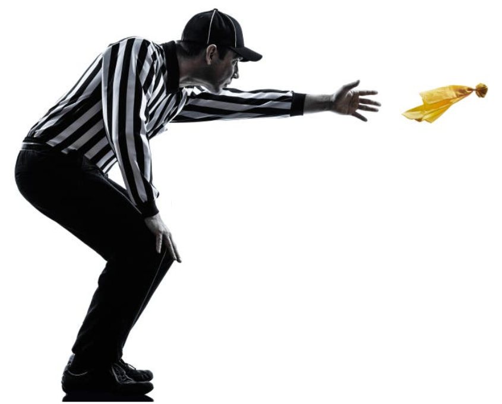

NFL Data Exploration Dashboard
With approximately 17.1 million people tuning in each week to watch the NFL and over 100 million sitting down last February for the Super Bowl, the NFL is America's most popular sport! With so many different positions a player can fill and so many statistics that can be tracked, there is no shortage of data in the world of American football. In this interactive visualization story, you will see a breakdown of various team-level and individual player statistics, but the main focus will be penalty flags. Penalties can have a huge effect - sometimes costing a team the entire game or possibly even the whole season. And in recent years, new rules aimed at improving player safety have increased certain penalties' frequency. How have these changes effected the game? ... keep scrolling to find out. But before getting into the nitty-gritty of penalties, you can use the next page to explore overall trends in various NFL stats from the last couple of decades. Have fun!
A penalty, or flag, is a sanction assessed against a team for a violation of the rules.

These are some examples of penalties that different rule changes over NFL history may have effected. Click on the buttons to see some examples!
Notice the sharp increase in penalties during the 2011 season. New rule changes in that year regarding "launching" and a more liberal redefining of a "defenseless player" could be some such reasons for this spike (see Rule Changes at Wikipedia - NFL 2011). This increase in 2011 was also accompanied by an increase in sacks and a decrease in kickoff returns for touchdowns, but how much do penalties effect a game's outcome? See the next slide!
This is an interactive treemap that allows you to adjust the NFL Season from 2004-2019 along with the penalty counts of different teams for different games! Update the treemap with the buttons provided below, and the map will cascade downward, originally showing all the sixteen seasons, followed by the eight different categories of penalty selection, and finally the number of wins/losses. The size of each box indicates the number of available subsections for that datapoint. Interesting Statistic: Check out the number of games with 15 or more penalties in 2004 versus 2019!